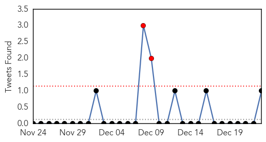
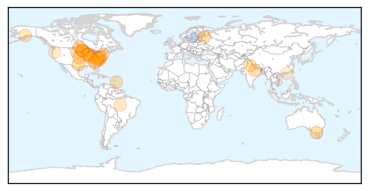

Influenza
30-Day Web Trend
1 alerts, 0 warnings

30-Day Twitter Trend
2 alerts, 0 warnings

Article Locations
Article Confidences

Top Articles:
- 0.999
- Why the CDC Says Bay Area Residents are In For the Flu Season of Their Lives
- 0.999
- Flu widespread, severe: How to protect yourself and others
- 0.997
- Confirmed cases of flu rising rapidly in Genesee County
- 0.996
- GHS asks kids, sick people to stop visiting
- 0.996
- State Health Department urges flu vaccinations
- 0.996
- Inside the labs that attempt to keep the flu virus at bay
- 0.994
- Area hospitals put precautions in place to halt spread of flu
- 0.994
- Climbing flu cases prompt hospital visitor restrictions
- 0.993
- Influenza expected to peak next week
- 0.990
- Flu forces area hospitals to restrict visitors
- 0.988
- Feeling sick? Either of these bugs could be to blame
- 0.984
- Flu cases on the rise in Illinois
- 0.975
- Ellenton boy died of flu complications
- 0.971
- The Rocky Mount Telegram
- 0.965
- Flu Virus A "Widespread" Issue In Kansas
- 0.964
- Health Dept. Restricts Children from Visiting Local Hospitals -
- 0.961
- Flu is widespread in Kentucky
- 0.960
- Outbreaks Of Norovirus Are Hitting Minnesota Hard « CBS Minnesota
- 0.951
- Flu Widespread in Delaware, officials Urge Vaccination
- 0.934
- WebMD ranks the Twin Cities as the 3rd-sickest community in the country
- 0.918
- Wildlife experts on 'high alert' as Sultanpur's migrant birds are monitored for avian flu
- 0.890
- Germany Battles Avian Flu, Brings in Movement Controls
- 0.880
- Senators want wider distribution of flu vaccine
- 0.880
- Senators want wider distribution of flu vaccine
- 0.867
- Flu Continues to Spread in Virginia: Two Pediatric Deaths
- 0.864
- Roanoke doctors seeing spike in flu cases over past two weeks
- 0.854
- Senators Want Wider Distribution of Flu Vaccine
- 0.850
- Good news for the city
- 0.837
- More avian flu reported in Vietnam, Germany
- 0.776
- WDFW seeks public’s help in testing wild birds for flu
- 0.702
- Today's stories from newspapers in North Bay Nipissing
- 0.615
- South Korea Ban US Poultry Imports for 21 days
- 0.543
- Hong Kong halts some US poultry imports due to bird flu in US — Health — Bangor Daily News — BDN Maine
Top Tweets:
- 0.712
- RT: CDTR 51/2014: ebola update; several highly pathogenic avianinfluenza virus outbreaks;influenza at low levels in EU h…
- 0.622
- CDTR 51/2014: ebola update; several highly pathogenic avianinfluenza virus outbreaks;influenza at low levels in EU http://t.co/kfCHlL1Zb9
Unknown
30-Day Web Trend
0 alerts, 0 warnings

30-Day Twitter Trend
0 alerts, 0 warnings

Article Locations

Article Confidences

Top Articles:
- 0.995
- WALB.com, South Georgia News, Weather, Sports
- 0.994
- KDHE and CDC investigate new virus
- 0.991
- Flu forces some North Carolina hospitals to limit visits
- 0.989
- As flu spreads, treatment in short supply
- 0.989
- New 'Bourbon Virus' From Ticks Discovered
- 0.989
- Kansas says new virus found after resident's death
- 0.989
- New Tick-Borne 'Bourbon Virus' Discovered in Kansas After Infected Man Dies; CDC, Doctors Don't Know How to Stop It
- 0.988
- Flu season likely will be severe, Pennsylvania experts say
- 0.982
- Flu cases spike in Richmond area
- 0.967
- CDC says flu shot less effective, but still recommended
- 0.967
- Officials Discover New Type of Virus After Investigating the Death of a Kansas Resident
- 0.967
- Swine virus found on four Waianae pig farms
- 0.963
- Chandigarh officials suspected with bird flu test negative
- 0.955
- Health Department sees flu hospitalizations surge, urges vaccination
- 0.940
- Number of flu cases growing
- 0.924
- CDC Discovers New Tick-Borne “Bourbon” Virus
- 0.919
- Illinois Reports "Widespread" Flu
- 0.917
- Chicago Tribune
- 0.917
- Chicago Tribune
- 0.917
- Chicago Tribune
- 0.917
- Chicago Tribune
- 0.917
- Chicago Tribune
- 0.917
- Chicago Tribune
- 0.917
- Chicago Tribune
- 0.917
- Chicago Tribune
- 0.917
- Chicago Tribune
- 0.917
- Chicago Tribune
- 0.917
- Chicago Tribune
- 0.917
- Chicago Tribune
- 0.917
- Chicago Tribune
- 0.917
- Chicago Tribune
- 0.917
- Chicago Tribune
- 0.917
- Chicago Tribune
- 0.917
- Chicago Tribune
- 0.917
- Chicago Tribune
- 0.917
- Chicago Tribune
- 0.917
- Chicago Tribune
- 0.917
- Chicago Tribune
- 0.917
- Chicago Tribune
- 0.917
- Chicago Tribune
- 0.917
- Chicago Tribune
- 0.917
- Chicago Tribune
- 0.917
- Chicago Tribune
- 0.917
- Chicago Tribune
- 0.917
- Chicago Tribune
- 0.917
- Chicago Tribune
- 0.917
- Chicago Tribune
- 0.917
- Chicago Tribune
- 0.917
- Chicago Tribune
- 0.917
- Chicago Tribune
Showing top 50 articles...
Top Tweets:
- 0.767
- making the flu vaccine http://t.co/Iv7YsxRQ6p flu infectious disease prevention http://t.co/9e9ooHFNXZ